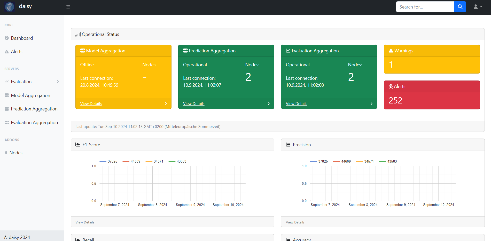
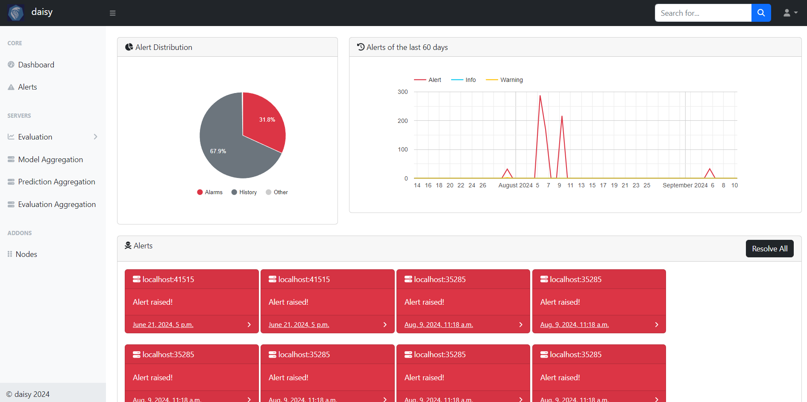

Dashboard
The in the framework included dashboard provides an overview of each client’s performance in a federated learning setting, as well as any alerts raised by the Intrusion Detection System (IDS). Additionally, it offers the ability to export data for further investigation.
Performance Overview
This section displays an aggregated view of each client’s performance in the federated learning environment. You can track important metrics like training loss, accuracy, and model updates.
Metrics Overview: Visual representations of the metrics from each client.
Per-Client Performance: Detailed insights into each client’s performance, allowing you to assess and compare them.
System Alerts
The dashboard integrates an Intrusion Detection System (IDS) that monitors any suspicious activities or potential threats. Alerts raised by the IDS are displayed here, providing an overview of the security status.
Alert Types: View different types of alerts (e.g., anomalies in model updates, malicious activities).
Alert Severity: Alerts are categorized by severity to allow for a prioritized response.
Data Export for Further Investigation
The dashboard allows users to export performance data and IDS alerts in various formats for deeper analysis or external investigation.
Export Options: Export as CSV
Customizable: Select the specific clients for which data should be exported.